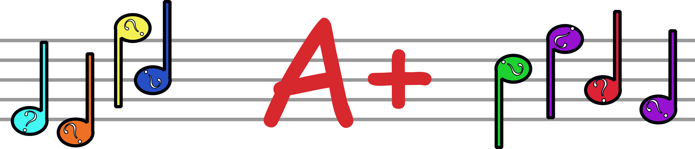

Home
Notes
Rhythm
Quiz
Contact
Test Yourself!

Phew! That was a lot of learning. Ready to see how much you remember?
Let's take a Quiz!
What kind of note has one whole beat?
A) A Crotchet
B) A Minim
C) A Semi-Breath
What is the 'G Clef' also known as?
A) The Trouble Clef
B) The Tripple Clef
C) The Treble Clef
How many beats are in a bar when the 'Time Signature' is 2/4?
A) Four Beats
B) Six Beats
C) Two Beats
When using the 'G Clef', what note is on the 3rd (middle) line?
A) C
B) B
C) F
How long does a 'Semi-Breath' last?
A) Four Beats
B) Three Beats
C) Two Beats
How many notes are in a 'Chord'?
A) Two
B) Three
C) Seven
Which of these is
not
a note?
A) G
B) E
C) H
How far apart are the notes in a 'Simple Chord'?
A) One Note Appart
B) Two Notes Appart
C) Three Notes Appart
How do you play a 'Chord'?
A) Play the lowest note first, then the middle, then the top
B) Play them all at the same time
C) Play randomly and try not to break your fingers
How many beats does a 'Minim' have?
A) Three Beats
B) Two Beats
C) Four Beats